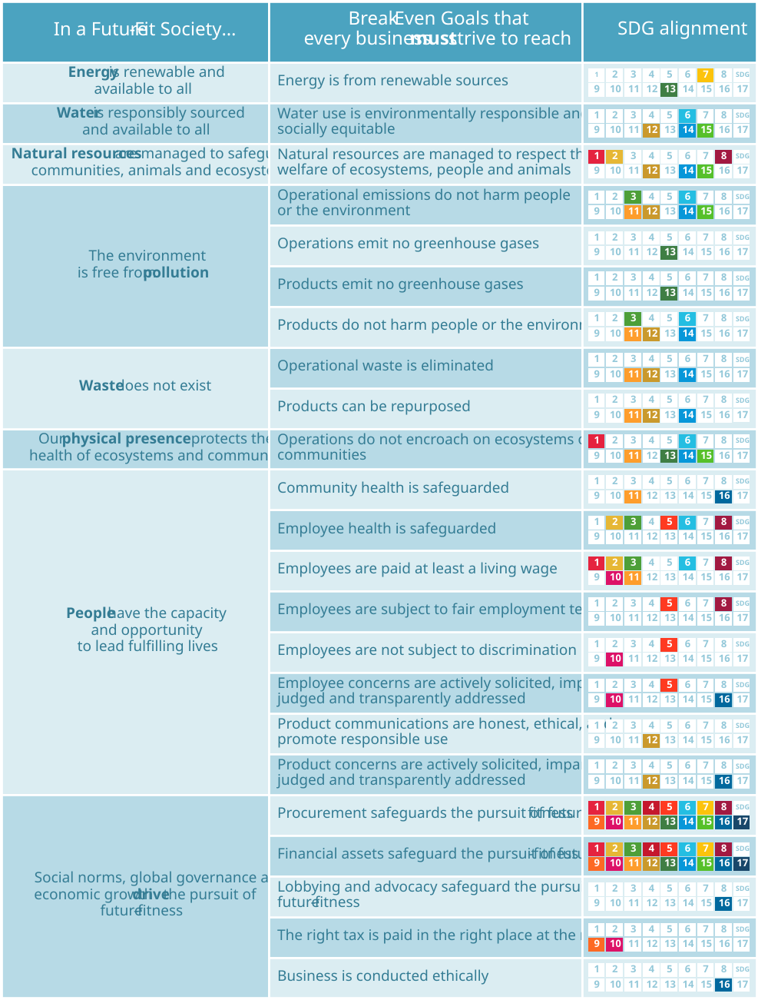

6. Break-Even Goals
Figure 6.1: The Future-Fit Break-Even Goals.

The 23 Break-Even Goals presented here are grouped according to the eight Properties of a Future-Fit Society. For each goal a summary is given, together with a link to download the goal’s Action Guide where detailed guidance on pursuing the goal can be found.
6.1 Energy
In a Future-Fit Society, energy is renewable and available to all.
BE01: Energy is from renewable sources
Oil, coal and gas are often obtained in environmentally destructive ways, and their use as fuels leads to greenhouse gas emissions. Furthermore, these resources are finite, and their value to society extends far beyond combustion.
To be Future-Fit, a company must ensure that all the energy it consumes – as electricity, heat or fuel – is derived from renewable energy sources. These include solar, wind, wave and hydropower, geothermal resources, and biomass.
See Action Guide.
6.2 Water
In a Future-Fit Society, water is responsibly sourced and available to all.
BE02: Water use is environmentally responsible and socially equitable
Through excessive withdrawals of water, discharge of polluted wastewater, or by adversely affecting the characteristics of any withdrawn water before returning it to nature, a company may undermine the quantity, quality, and availability of water at a local level.
Companies must ensure that their use of water doesn’t undermine the quantity and quality of water available for people and ecosystems that depend on the watersheds concerned.
To be Future-Fit a company must:
- minimize – and in water-stressed regions eventually eliminate – its consumption of water for industrial and commercial purposes; and
- ensure that any discharges do not degrade the quality of the receiving water bodies, the health of receiving soils, or in any other way cause harm to ecosystems or people.
See Action Guide.
6.3 Natural resources
In a Future-Fit Society, natural resources are managed to safeguard communities, animals and ecosystems.
BE03: Natural resources are managed to respect the welfare of ecosystems, people and animals
As demand for natural resources increases, so does the pressure placed on the ecosystems, people and animals that contribute to their delivery.
The emphasis here is on causing no harm as a result of the company’s ownership or management and extraction of natural resources. This includes but is not limited to:
- Harvesting renewable resources at rates that do not reduce nature’s capacity to regenerate them.
- Extracting non-renewable resources in ways that do not systematically damage surrounding ecosystems and communities.
- Respecting the welfare of animals.
- Avoiding conflict and human rights violations when mining valuable minerals.
To be Future-Fit, a company must:
- preserve the health of all natural resources it owns or manages; and
- protect the health of any ecosystems and communities impacted by harvesting and extraction activities.
See Action Guide.
6.4 Pollution
In a Future-Fit Society, the environment is free from pollution.
BE05: Operational emissions do not harm people or the environment
Company operations can cause the release of a range of chemicals and particles. The emission of substances that are already abundant in nature, and of substances that nature can break down rapidly and without consequence, are not a concern.
Some substances are known to be toxic to people and organisms. Other substances may not seem immediately harmful, but if nature cannot break them down rapidly they may – through gaseous, liquid or solid emissions – systematically build up in the environment to dangerous levels.
Substances of greatest concern include those that are scarce in nature (e.g. trace metals such as cadmium), those that are persistent (e.g. CFCs), and those that are emitted in large volumes (e.g. NOx). All such potentially harmful substances must be kept in tight closed loops, or not used in the first place. The context of this goal may vary from local (e.g. soil, rivers) to global (e.g. air, oceans) depending on the substance and mode of emission.
To be Future-Fit, a company must:
- eliminate harmful gaseous emissions (e.g. air pollutants, toxic fumes);
- eliminate harmful solid emissions (e.g. scarce metals, use of hazardous fertilizers); and
- eliminate harmful liquid emissions (e.g. spills, chemical fluids).
See Action Guide.
BE06: Operations emit no greenhouse gases
Nature can safely absorb some human-made greenhouse gases (GHGs) every year, but the Future‑Fit imperative is for companies to eliminate all operational GHG emissions. That’s because we are dangerously close to reaching atmospheric GHG levels that will be catastrophic for society, and any attempt to divide up the remaining carbon budget across companies is likely to be too complex, contentious and/or time-consuming to result in the scale and speed of reduction that is now needed.
To be Future-Fit, a company must emit net zero GHGs as a result of its own operational activities and its energy consumption. Net GHG emissions here means total GHG emissions, less any emissions that are permanently sequestered or adequately offset.
See Action Guide.
BE18: Products emit no greenhouse gases
As with the goal Operations emit no greenhouse gases, the imperative is for companies to eliminate all GHG emissions caused by their products.
Products powered by electricity may indirectly cause GHG emissions if the electricity derives from fossil fuels, but the products are not themselves forcing that. The focus here is on products that emit GHGs as a direct consequence of their use.
To be Future-Fit, a company must ensure that none of its products emit greenhouse gases.
See Action Guide.
BE17: Products do not harm people or the environment
Although many goods and services could be used in ways that harm people or the environment, the focus here is on three areas: those which are intended to cause harm; those whose use could reasonably be expected to result in harm; and those which instill or reinforce behaviours that undermine society’s progress to future-fitness.
A Future-Fit company ensures that any goods and services it provides, when used as intended, do not lead to environmental degradation, ecosystem disruption, or negative impacts on people’s physical and mental wellbeing.
With respect to physical goods, this goal encompasses sold and leased goods, as well as any other items provided to others in support of commercial activities, but which the company does not consider to be revenue-generating. It covers both final end-user products, and intermediate goods incorporated or processed into final products by other companies.
To be Future-Fit, a company must ensure that the goods and services it provides to others are not likely to cause harm to people or the environment through their use and (in the case of physical goods) at their end of life.
See Action Guide.
6.5 Waste
In a Future-Fit Society, waste does not exist.
BE07: Operational waste is eliminated
For the purposes of this goal, waste means all materials generated as by‑products of production and other operational activities which the company manages to contain, and which require treatment, repurposing, or disposal.
This includes both hazardous and non-hazardous manufacturing materials, as well as non-production waste such as office paper, food, and retired equipment.
Organic waste may be composted and returned to the soil, but any materials that can be reused must be reclaimed.
To be Future-Fit, a company must:
- eliminate all avoidable waste generation; and
- reuse, recycle or otherwise repurpose any remaining waste.
See Action Guide.
BE19: Products can be repurposed
A Future-Fit company does all it can to ensure that the physical goods it provides to others can be responsibly repurposed at the end of their useful lives.
This goal encompasses sold and leased goods, as well as any other items provided to others in support of commercial activities, but which the company does not consider to be revenue-generating. It covers both final end-user products, and intermediate goods incorporated or processed into final products by other companies.
To be Future-Fit, a company must:
- ensure that whatever remains of the goods it supplies can be separated at the end of their useful life, to maximize their post-use recovery value; and
- ensure that its customers have ready access to recovery services capable of extracting such value.
See Action Guide.
6.6 Physical presence
In a Future-Fit Society, our physical presence protects the health of ecosystems and communities.
BE08: Operations do not encroach on ecosystems or communities
Growing demand for land is putting pressure on ecosystems, communities and plant and animal species. Companies that do not adequately consider the impacts of their physical presence may cause irreversible degradation to natural processes and resources that they and others rely on, and may undermine the wellbeing of local communities.
Negative impacts must be avoided by:
- Respecting the land rights of communities (e.g. zero tolerance of land grabbing).
- Protecting aquatic ecosystems from degradation (e.g. avoiding coral reefs).
- Protecting areas of high biodiversity value (e.g. no clearing of rainforest for farmland).
- Not encroaching on areas of cultural importance (e.g. oil pipelines running through regions considered sacred by Indigenous Peoples).
To be Future-Fit, a company must:
- protect such areas where it is already present; and
- take steps to avoid or mitigate negative outcomes when moving into new areas.
See Action Guide.
6.7 People
In a Future-Fit Society, people have the capacity and opportunity to lead fulfilling lives.
BE09: Community health is safeguarded
Every business depends on the goodwill, health and resilience of the communities in which it operates, and must ensure its presence does nothing to undermine their wellbeing.
Future-Fit companies take all steps possible to ensure their presence does not negatively impact surrounding communities. The emphasis here is on putting in place appropriate mechanisms to pre-empt, identify, assess and manage community concerns, so that potentially serious issues and legitimate grievances do not go unaddressed.
To be Future-Fit a company must:
- seek to anticipate and avoid concerns from communities potentially affected by its activities;
- impartially assess any concerns that do arise; and
- ensure it effectively and transparently manages those concerns.
See Action Guide.
BE10: Employee health is safeguarded
Companies that do not adequately address workplace health issues may cause serious long-term negative health problems for their employees.
Note that "health" here extends beyond physical safety to mental and emotional wellness, and must encompass stress management and mitigation.
When it comes to physical safety, companies should take steps to minimize and mitigate the effects of accidents, and strive continuously to reduce work-related injuries, illnesses, and fatalities to zero.
To be Future-Fit a company must:
- ensure the safety of all workers;
- foster physical health (e.g. through proactive positions on exercise, nutrition and smoking); and
- foster mental wellbeing (e.g. zero tolerance of bullying and harassment).
See Action Guide.
BE11: Employees are paid at least a living wage
A company should ensure all its employees and their families have the means to afford health coverage, to eat a nutritious diet and to be free of concerns about meeting basic needs.
A living wage affords a decent standard of living for workers and their families. Living wage estimates vary by region and guidance is offered by government agencies, academics and/or NGOs. In many regions, the living wage is higher than the legal minimum wage or poverty-line wage. Living wage calculations should focus on employee compensation with respect to standard working hours: figures should exclude overtime pay as well as productivity bonuses and allowances, unless they are guaranteed.
To be Future-Fit a company must pay all its employees at least a living wage.
See Action Guide.
BE12: Employees are subject to fair employment terms
Employees who work reasonable hours, who feel secure in their employment, and who are afforded adequate time off are more likely to thrive physically, emotionally, and mentally – in and outside work.
This means that employees must have the right of association (e.g. the right to join – or refrain from joining – a union), the right to reasonable working hours, the right to leisure (e.g. holiday entitlements and overtime pay) and the right to parental leave.
To be Future-Fit a company must:
- ensure the company does not use child labour;
- ensure employees’ freedom of association;
- structure contracts to include fair working hours; and
- accommodate appropriate periods of leave from work.
See Action Guide.
BE13: Employees are not subject to discrimination
Everyone is entitled to equitable treatment and equal opportunity, irrespective of personal characteristics such as age, gender, sexual orientation, ethnicity, country of origin, or disability.
Discrimination in the workplace may take many forms, and discriminatory behaviour can be perpetuated – or at least go unnoticed and unchallenged – by established norms and practices within organizations.
To be Future-Fit, a company must be proactive in investigating and monitoring key practices – such as recruitment, pay structures, hiring, performance assessment and promotions – to ensure that no discrimination occurs, however unintentional it may be.
See Action Guide.
BE14: Employee concerns are actively solicited, impartially judged and transparently addressed
Companies depend on the commitment and motivation of their employees, so it is good business sense to engage them as much as possible. The intent of this goal is to set a minimum threshold of acceptable performance in this regard, which means ensuring that the company does nothing to undermine its employees’ wellbeing.
No company can be completely free of employee concerns, but it must take all steps possible to minimize concerns, and to deal effectively and appropriately with any concerns that arise.
To be Future-Fit, a company must put in place appropriate mechanisms to identify and manage employee concerns, so that potentially serious issues and legitimate grievances do not go unaddressed.
See Action Guide.
BE15: Product communications are honest, ethical, and promote responsible use
Some goods and services may cause harm to people or ecosystems, either because of the way they are designed, or because there is a chance that users could misuse them or dispose of them incorrectly. The company must make potential users aware of such risks, to empower them to make well-informed decisions regarding the purchase, use and (in the case of physical goods) post‑use processing of its products.
In addition, a company must ensure it markets its products honestly and responsibly by avoiding all misleading claims regarding product benefits, and by only targeting appropriate customer groups (e.g. not marketing cigarettes or alcohol directly to children).
These requirements cover both final products designed for end users, and interim goods which are incorporated or processed into final products by other companies.
To be Future-Fit, a company must:
- ensure users are informed about any negative impacts of its products;
- ensure users are not subject to false or misleading claims about the benefits of its products; and
- ensure products are marketed only to those capable of making informed purchasing decisions.
See Action Guide.
BE16: Product concerns are actively solicited, impartially judged and transparently addressed
Other product goals address the ethical marketing of the company’s goods and services, whether they have the potential to cause harm, and how to ensure that goods can be repurposed at the end of their useful life. By living up to all of these goals, a company can minimize the number of concerns its customers have. However, it is still important that customers are able to voice legitimate concerns – and to have those concerns fairly addressed – if they feel that a company has fallen short of meeting its obligations.
These requirements cover both final products designed for end users, and interim goods which are incorporated or processed into final products by other companies.
To be Future-Fit, a company must therefore put in place effective policies and procedures to actively solicit, impartially judge and transparently address customer concerns relating to the environmental and social impact of the goods or services it delivers.
See Action Guide.
6.8 Drivers
In a Future-Fit Society, social norms, global governance and economic growth drive the pursuit of future-fitness.
BE04: Procurement safeguards the pursuit of future-fitness
Every company relies to some extent upon goods and services procured from other organizations, which are collectively referred to as suppliers. Common examples include energy, water, computers, transport, machinery, furniture, accounting services, andmaterials required to make products.
All companies are mutually accountable for the environmental and social impacts caused by the production and delivery of the goods and services they depend upon. Only when a company has effectively avoided or addressed such negative impacts can it consider itself to be Future-Fit.
This goal requires a company to implement policies and procedures that continuously seek to increase the future-fitness of its purchases, with a particular emphasis on anticipating, avoiding and addressing issue-specific supply chain hotspots.
To be Future-Fit, a company must:
- have policies and processes in place that enable it and its employees to anticipate where negative supply chain impacts are likely to occur;
- avoid them where possible; and
- take measurable steps to address concerns that arise.
See Action Guide.
BE20: Business is conducted ethically
All Future-Fit Break-Even Goals can and should be interpreted as matters of business ethics that apply to any company. This goal, in contrast, focuses on the proactive identification and pre-emptive prevention of any specific issues which could – due to the unique nature of a company’s business – lead to ethical breaches.
The kinds of ethical breach that might occur will vary widely across companies, depending on their size, structure, sector, business model, geographical presence, and so on. A Future-Fit company is not one that is immune to ethical concerns and challenges. Rather, it is one that puts in place effective internal control mechanisms to reduce the likelihood of breaches, to encourage people (employees and third parties) to raise the alarm when one does occur, and to respond effectively to them. Examples of potential issues include:
- Anti-competitive practices (e.g. unfair supplier treatment, price fixing).
- Dis-information (e.g. misrepresenting or failing to disclose information which could influence stakeholder decisions or wellbeing).
- Abuse of trust (e.g. inappropriate use of personal data).
- Wilful ignorance (e.g. neglecting to investigate supply chains in which human rights abuses are suspected).
To be Future-Fit, a company must:
- identify high-risk areas for ethical issues within the business;
- adopt a public commitment to ethical conduct; and
- establish internal controls to ensure it lives up to that commitment.
See Action Guide.
BE21: The right tax is paid in the right place at the right time
Governments require tax revenue to fund critical services upon which society and business depends. Companies have an obligation to their shareholders to be diligent in their approach to tax payments. This goal recognizes the fact that through taxation any company must also contribute to the infrastructure it utilizes and relies upon for its success (e.g. transport networks, legal system, healthcare, education, public utilities) and even its existence, meaning that these outcomes are not at odds with each other.
To be Future-Fit, a company must:
- commit publicly to a responsible tax policy;
- adopt a transparent approach to tax reporting; and
- not deliberately seek ways to obey the letter but not the spirit of regional tax laws.
See Action Guide.
BE22: Lobbying and advocacy safeguard the pursuit of future-fitness
Companies often seek to influence the markets within which they operate, by pressuring and persuading those with the power to change them.
This goal recognizes that any attempt to influence market dynamics in favour of the business must not in any way contribute to hindering progress toward future-fitness, in or beyond the company. For example, a Future-Fit company would never knowingly fund any organization that protests against more stringent toxic emissions laws.
The requirement here is not to proactively lobby or advocate in favour of Future-Fit outcomes, but rather to ensure that the company does not use its influence to undermine such outcomes. This includes any direct effort by the company to sway public opinion (e.g. consumer campaigns), and also extends to cover contributions (e.g. membership fees or donations) to any third party which may influence on the company’s behalf.
To be Future-Fit, a company must:
- implement internal controls to ensure that the organization does not lobby or advocate against Future-Fit outcomes; and
- disclose details of the contributions it makes to third-party influencers.
See Action Guide.
BE23: Financial assets safeguard the pursuit of future-fitness
Many companies own or control financial assets (equity investments, debt instruments, cash deposits with banks) as part of their core business, as a strategic business objective or simply as a method of utilizing spare cash until it is needed for other purposes.
Purchasing and trading financial assets linked to an underlying organization supplies capital for the investee to continue – or expand – its activities. Any positive or negative outcomes caused by the investee may be sustained or increased by the capital provided, and so the investor is mutually accountable for them.
To be Future-Fit, a company using its capital to finance the activities of others must strive to safeguard the pursuit of future-fitness, by identifying and mitigating any negative impacts resulting from those activities.
See Action Guide.